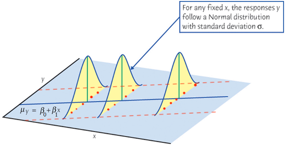

Regression Diagnostics - Linearity ▶️
MATH 4780 / MSSC 5780 Regression Analysis
Detecting Nonlinearity (CIA Example)
- Scatterplot \(y\) against each \(x\) can be misleading! It shows the marginal relationship between \(y\) and each \(x\), without controlling the level of other regressors.

Detecting Nonlinearity: Residual Plots
Care about the partial relationship between \(y\) and each \(x\) with impact of other \(x\)s controlled.
Residual-based plots are more relevant in detecting the departure of linearity.
- Residual plots cannot distinguish between monotone and non-monotone nonlinearity.
- The distinction:
- Monotone: just transform \(x\) to \(x^2\)
- Non-monotone: need quadratic form

Bulging Rule for Simple Monotone Nonlinearity
| The bulge points | Transform | Ladder of powers/roots |
|---|---|---|
| left | \(x\) | down, e.g., \(\log(x)\) |
| right | \(x\) | up |
| down | \(y\) | down |
| up | \(y\) | up |
- Prefer to transform an \(x\) rather than \(y\), unless we see a common pattern of nonlinearity in the partial relationships of \(y\) to many \(x\)s.

Transformation on \(x\)s
-
gdptolog(gdp) -
healthtohealth + health^2

R Lab Plotting against Original Untransformed \(x\)


Other Methods for Dealing with Nonlinearity
- Lack-of-fit test (LRA Sec 4.5, CMR Sec. 3.6): Need repeated observations
- Transform a nonlinear function into a linear one (LRA Sec 5.3)
Can the nonlinear model \(y = \beta_0e^{\beta_1x}\epsilon\) be transformed into a linear one (intrinsically linear)?
- Polynomial Regression, Regression Splines or other nonparametric regression (MSSC 6250)
- A (pure) nonlinear model may be needed if the model assumptions cannot be satisfied.